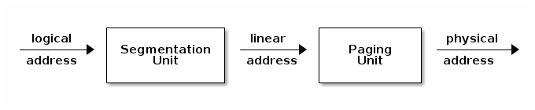
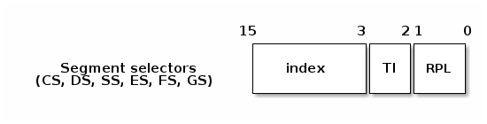
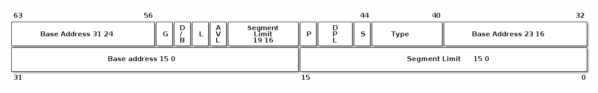
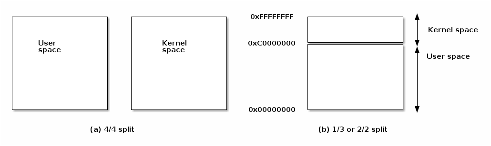
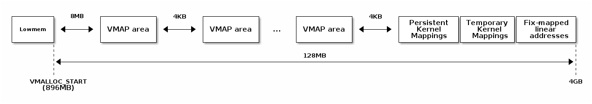

地址空间
- x86 MMU
- 分段
- 分页
- TLB
- Linux 地址空间
- 用户空间
- 内核空间
- 高内存（high memory）



/*
* Linux 中每个 CPU 的 GDT 布局：
*
* 0——空（null） <=== 缓存行 #1
* 1——保留
* 2——保留
* 3——保留
*
* 4——未使用 <=== 缓存行 #2
* 5——未使用
*
* ------- TLS（线程本地存储）段的开始：
*
* 6——TLS 段 #1 [ glibc 的 TLS 段 ]
* 7——TLS 段 #2 [ Wine 的 %fs Win32 段 ]
* 8——TLS 段 #3 <=== 缓存行 #3
* 9——保留
* 10——保留
* 11——保留
*
* ------- 内核段的开始：
*
* 12——内核代码段 <=== 缓存行 #4
* 13——内核数据段
* 14——默认用户 CS
* 15——默认用户 DS
* 16——TSS <=== 缓存行 #5
* 17——LDT
* 18——PNPBIOS 支持（16->32 门）
* 19——PNPBIOS 支持
* 20——PNPBIOS 支持 <=== 缓存行 #6
* 21——PNPBIOS 支持
* 22——PNPBIOS 支持
* 23——APM BIOS 支持
* 24——APM BIOS 支持 <=== 缓存行 #7
* 25——APM BIOS 支持
*
* 26——ESPFIX 小型 SS
* 27——每个 CPU [ 指向每个 CPU 数据区的偏移量 ]
* 28——stack_canary-20 [ 用于栈保护 ] <=== 缓存行 #8
* 29——未使用
* 30——未使用
* 31——用于双重故障处理的 TSS
*/
DEFINE_PER_CPU_PAGE_ALIGNED(struct gdt_page, gdt_page) = { .gdt = {
#ifdef CONFIG_X86_64
/*
* 在长模式下，我们也需要有效的内核数据和代码段
* IRET 将检查段类型 kkeil 2000/10/28
* 同样，sysret 需要特殊的 GDT 布局
*
* 目前，TLS 描述符与 i386 上的位置不同。
* 希望没有人期望它们位置固定（Wine？）
*/
[GDT_ENTRY_KERNEL32_CS] = GDT_ENTRY_INIT(0xc09b, 0, 0xfffff),
[GDT_ENTRY_KERNEL_CS] = GDT_ENTRY_INIT(0xa09b, 0, 0xfffff),
[GDT_ENTRY_KERNEL_DS] = GDT_ENTRY_INIT(0xc093, 0, 0xfffff),
[GDT_ENTRY_DEFAULT_USER32_CS] = GDT_ENTRY_INIT(0xc0fb, 0, 0xfffff),
[GDT_ENTRY_DEFAULT_USER_DS] = GDT_ENTRY_INIT(0xc0f3, 0, 0xfffff),
[GDT_ENTRY_DEFAULT_USER_CS] = GDT_ENTRY_INIT(0xa0fb, 0, 0xfffff),
#else
[GDT_ENTRY_KERNEL_CS] = GDT_ENTRY_INIT(0xc09a, 0, 0xfffff),
[GDT_ENTRY_KERNEL_DS] = GDT_ENTRY_INIT(0xc092, 0, 0xfffff),
[GDT_ENTRY_DEFAULT_USER_CS] = GDT_ENTRY_INIT(0xc0fa, 0, 0xfffff),
[GDT_ENTRY_DEFAULT_USER_DS] = GDT_ENTRY_INIT(0xc0f2, 0, 0xfffff),
/*
* 用于调用 PnPBIOS 的段具有字节粒度。
* 代码段和数据段具有固定的 64K 限制，
* 传输段的大小在运行时设置。
*/
/* 32 位代码 */
[GDT_ENTRY_PNPBIOS_CS32] = GDT_ENTRY_INIT(0x409a, 0, 0xffff),
/* 16 位代码 */
[GDT_ENTRY_PNPBIOS_CS16] = GDT_ENTRY_INIT(0x009a, 0, 0xffff),
/* 16 位数据 */
[GDT_ENTRY_PNPBIOS_DS] = GDT_ENTRY_INIT(0x0092, 0, 0xffff),
/* 16 位数据 */
[GDT_ENTRY_PNPBIOS_TS1] = GDT_ENTRY_INIT(0x0092, 0, 0),
/* 16 位数据 */
[GDT_ENTRY_PNPBIOS_TS2] = GDT_ENTRY_INIT(0x0092, 0, 0),
/*
* APM 段具有字节粒度，并且它们的基址在运行时设置。
* 所有段的限制都是 64K。
*/
/* 32 位代码 */
[GDT_ENTRY_APMBIOS_BASE] = GDT_ENTRY_INIT(0x409a, 0, 0xffff),
/* 16 位代码 */
[GDT_ENTRY_APMBIOS_BASE+1] = GDT_ENTRY_INIT(0x009a, 0, 0xffff),
/* 数据 */
[GDT_ENTRY_APMBIOS_BASE+2] = GDT_ENTRY_INIT(0x4092, 0, 0xffff),
[GDT_ENTRY_ESPFIX_SS] = GDT_ENTRY_INIT(0xc092, 0, 0xfffff),
[GDT_ENTRY_PERCPU] = GDT_ENTRY_INIT(0xc092, 0, 0xfffff),
GDT_STACK_CANARY_INIT
#endif
} };
EXPORT_PER_CPU_SYMBOL_GPL(gdt_page);


struct * page;
pgd_t pgd;
pmd_t pmd;
pud_t pud;
pte_t pte;
void *laddr, *paddr;
pgd = pgd_offset(mm, vaddr);
pud = pud_offet(pgd, vaddr);
pmd = pmd_offset(pud, vaddr);
pte = pte_offset(pmd, vaddr);
page = pte_page(pte);
laddr = page_address(page);
paddr = virt_to_phys(laddr);
static inline pud_t * pud_offset(pgd_t * pgd,unsigned long address)
{
return (pud_t *)pgd;
}
static inline pmd_t * pmd_offset(pud_t * pud,unsigned long address)
{
return (pmd_t *)pud;
}
单地址失效：
mov $addr, %eax
invlpg %(eax)
全失效：
mov %cr3, %eax
mov %eax, %cr3



void* vmalloc(unsigned long size);
void vfree(void * addr);
void *ioremap(unsigned long offset, unsigned size);
void iounmap(void * addr);
set_fixmap(idx, phys_addr)
set_fixmap_nocache(idx, phys_addr)
/*
* 这里定义了所有在编译时“特殊”的虚拟地址。
* 目的是在编译时有一个常量地址，但物理地址只在引导过程中设置。
* 对于 x86_32：我们从虚拟内存的末尾（0xfffff000）开始分配这些特殊地址。
* 这样还可以保证安全的 vmalloc()，可以确保这些特殊地址和 vmalloc() 的地址不重叠。
*
* 这些“编译时分配”的内存缓冲区是固定大小的 4k 页（如果使用的增量大于 1，则可以更大）。
* 使用 set_fixmap(idx,phys) 将物理内存与 fixmap 索引关联起来。
*
* 这些缓冲区的 TLB 条目在任务切换时不会被刷新。
*/
enum fixed_addresses {
#ifdef CONFIG_X86_32
FIX_HOLE,
#else
#ifdef CONFIG_X86_VSYSCALL_EMULATION
VSYSCALL_PAGE = (FIXADDR_TOP - VSYSCALL_ADDR) >> PAGE_SHIFT,
#endif
#endif
FIX_DBGP_BASE,
FIX_EARLYCON_MEM_BASE,
#ifdef CONFIG_PROVIDE_OHCI1394_DMA_INIT
FIX_OHCI1394_BASE,
#endif
#ifdef CONFIG_X86_LOCAL_APIC
FIX_APIC_BASE, /* 本地（CPU）APIC - 对 SMP 有要求或无要求 */
#endif
#ifdef CONFIG_X86_IO_APIC
FIX_IO_APIC_BASE_0,
FIX_IO_APIC_BASE_END = FIX_IO_APIC_BASE_0 + MAX_IO_APICS - 1,
#endif
#ifdef CONFIG_X86_32
FIX_KMAP_BEGIN, /* 用于临时内核映射的保留 pte */
FIX_KMAP_END = FIX_KMAP_BEGIN+(KM_TYPE_NR*NR_CPUS)-1,
#ifdef CONFIG_PCI_MMCONFIG
FIX_PCIE_MCFG,
#endif
#define __fix_to_virt(x) (FIXADDR_TOP - ((x) << PAGE_SHIFT))
#define __virt_to_fix(x) ((FIXADDR_TOP - ((x)&PAGE_MASK)) >> PAGE_SHIFT)
#ifndef __ASSEMBLY__
/*
* ‘索引到地址’转换。如果有人直接使用索引而没有进行转换，我们会通过一个空指针解引用内核崩溃来捕捉该错误。我们还会捕捉到非法的索引范围。
*/
static __always_inline unsigned long fix_to_virt(const unsigned int idx)
{
BUILD_BUG_ON(idx >= __end_of_fixed_addresses);
return __fix_to_virt(idx);
}
static inline unsigned long virt_to_fix(const unsigned long vaddr)
{
BUG_ON(vaddr >= FIXADDR_TOP || vaddr < FIXADDR_START);
return __virt_to_fix(vaddr);
}
inline long fix_to_virt(const unsigned int idx)
{
if (idx >= __end_of_fixed_addresses)
__this_fixmap_does_not_exist();
return (0xffffe000UL - (idx << PAGE_SHIFT));
}
kmap_atomic()，kunmap_atomic()#define kmap_atomic(page) kmap_atomic_prot(page, kmap_prot)
void *kmap_atomic_high_prot(struct page *page, pgprot_t prot)
{
unsigned long vaddr;
int idx, type;
type = kmap_atomic_idx_push();
idx = type + KM_TYPE_NR*smp_processor_id();
vaddr = __fix_to_virt(FIX_KMAP_BEGIN + idx);
BUG_ON(!pte_none(*(kmap_pte-idx)));
set_pte(kmap_pte-idx, mk_pte(page, prot));
arch_flush_lazy_mmu_mode();
return (void *)vaddr;
}
EXPORT_SYMBOL(kmap_atomic_high_prot);
static inline int kmap_atomic_idx_push(void)
{
int idx = __this_cpu_inc_return(__kmap_atomic_idx) - 1;
#ifdef CONFIG_DEBUG_HIGHMEM
WARN_ON_ONCE(in_irq() && !irqs_disabled());
BUG_ON(idx >= KM_TYPE_NR);
#endif
return idx;
}
kmap()，kunmap()